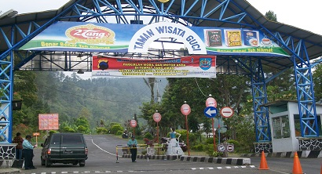

Guci Indah adalah Objek wisata yang berada di Desa Guci Kecamatan Bumijawa Kabupaten Tegal. Memiliki luas 210 Ha, terletak di kaki Gunung Slamet bagian utara dengan ketinggian kurang lebih 1.050 meter. Dari Kota Slawi berjarak ± 30 km, sedangkan dari Kota Tegal berjarak tempuh sekitar 40 km ke arah selatan. Air yang mengalir dari pancuran-pancuran di obyek wisata ini dipercaya bisa menyembuhkan penyakit seperti rematik, koreng serta penyakit kulit lainnya, khususnya Pemandian Pancuran 13 yang memang memiliki pancuran berjumlah tiga belas buah. Ada sekitar 10 air terjun yang terdapat di daerah Guci. Di bagian atas pemandian umum pancuran 13, terdapat air terjun dengan air dingin bernama Air Terjun Jedor. Dinamai begitu karena dulu tempat di sekitar air terjun setinggi 15 meter itu adalah milik seorang Lurah yang bernama Lurah Jedor. Untuk berkeliling di sekitar obyek wisata dapat dilakukan dengan menyewa kuda dengan tarif sewa yang relatif murah.
